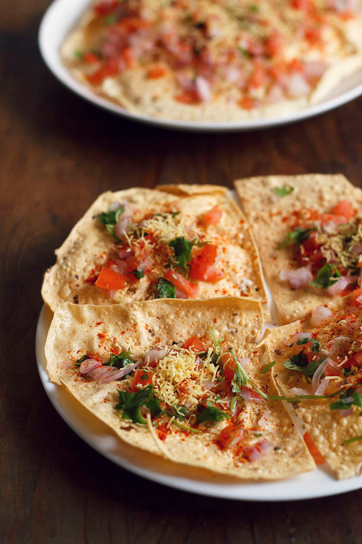

Masala Papad is a popular Indian snack made from a thin, crispy flatbread called papad. It is usually served as an appetizer or side dish. The papad is topped with a mixture of spices, onions, tomatoes, and other ingredients. It is usually served with chutney or yogurt. Masala Papad is a popular snack in India.
Meal prep time : 10 minutes
Servings : 6